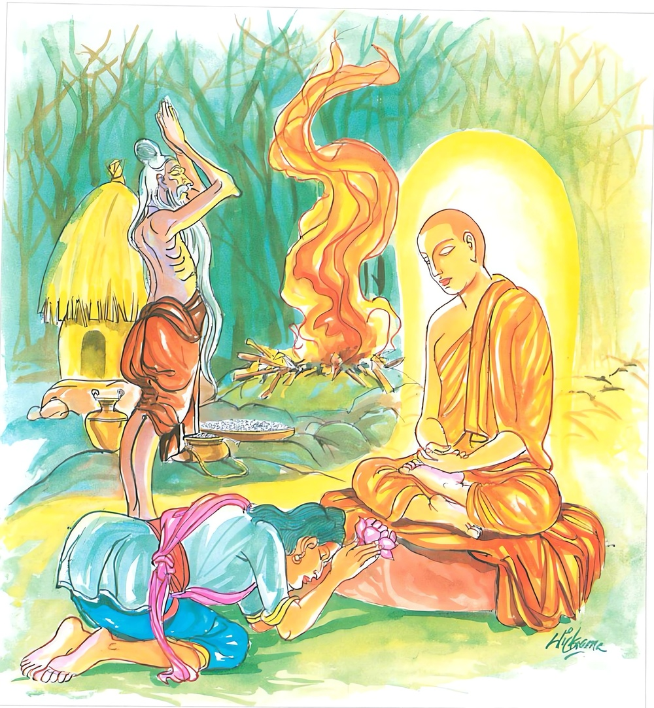

8-6 ශාරීපුත්රස්ථවිරයන් වහන්සේගේ බෑනා
මෙම කතාව ධම්මපද අටුවාවෙන් ද කියවන්න.
යො ච වස්සසතං ජන්තු අග්ගිං පරිචරෙ වනෙ
එකඤ්ච භාවිතත්තානං මුහුත්තමපි පූජයෙ
සා යෙව පූජනා සෙය්යා යඤ්චෙ වස්සසතං හුතං.
යම් පුරුෂයෙක් වෙනෙහි වැස (වෙනෙහිදි) ඉදින් හවුරුදු සියක් මුළුල්ලෙහි (කිරිබත් ගිතෙල් මී සකුරු ඉසීමෙන් සිදුහතු සුන්සාල් හීතණ ආදී යාග ද්රව්ය ගින්නෙහි බහා) වහ්නිපූජාව කෙළේ වේ ද, යම් පුරුෂයෙක් වනාහි (ශීලාදි ගුණ වශයෙන්) වඩන ලද සිත් ඇති එක් ආර්ය්යපුද්ගලයක්හු ඇසිල්ලකුදු (අහාරාදියෙන්) පිදූයේ වේ ද, හවුරුදු සියයක් මුළුල්ලෙහි කරණ ලද යම් වහ්නිපූජාවට වඩා ඇසිල්ලෙක ද ආර්ය්යයනට කරණ ලද ඒ ප්රත්යයපූජාව ම උත්තම යි.

ශාරීපුත්ර ස්ථවිරයන් වහන්සේ එක් දිනෙක, තම බෑණනු වූ බමුණකු වෙත ගියහ. හෙතෙමේ උන්වහන්සේ සතුටින් පිළිගෙණ වඩා හිඳුවා ආගන්තුක සත්කාර කොට පසෙකට වී හිඳ ගත්තේ ය.
|
ස්ථවිර තෙමේ |
:- |
කොහොම ද සැපසනීප? |
|
බ්රාහ්මණ තෙමේ |
:- |
වරදක් නැත. ඔහෙ ඉන්නවා. |
|
ස්ථවිර |
:- |
පින් දහම්? |
|
බ්රාහ්මණ |
:- |
ඔව්! ඒවාත් හැකි පමණටත් වඩා කරණවා. |
|
ස්ථවිර |
:- |
මොනව ද කරණ පින්කම්? |
|
බ්රාහ්මණ |
:- |
ස්වාමීනි! මසක් පාසා සිවුපාවකු මරා ගිනි දෙවියන් පුදනවා. |
|
ස්ථවිර |
:- |
එහෙමද, එයින් කුමක් බලාපොරොත්තු වන්නෙහි? |
|
බ්රාහ්මණ |
:- |
හා! ස්වාමීනි! මෙය මහපින්කමක්, බඹලොවට යන මග, ඒ නිසා එසේ කරණවා. |
|
ස්ථවිර |
:- |
සතුන් මැරීම බඹලොවට යන මගැ, යි කීවෝ කවුරු ද? |
|
බ්රාහ්මණ |
:- |
ගුරුන්නාන්සේ. |
|
ස්ථවිර |
:- |
බොරු නො කරව, බඹලොවට යන මග ඌ දන්නේ ද? තෝ දන්නෙහි ද? ඌත් නො දනී. තෝත් නො දනිහි, මා සමග යන්නට එව, එය කියවා දෙන්නට, එය දන්නෝ තිලෝගුරු වූ බුදුරජානන් වහන්සේ ම ය. උන් වහන්සේ හැර එය දන්නෝ නැත. |
මෙසේ කියා බෑනාත් ගෙණ බුදුරජුන් වෙත ගිය ස්ථවිරයන් වහන්සේ “ස්වාමීනි! මේ මාගේ බෑනා, මොහුට බඹලොවට යන මග වදාරනු මැනැවැ” යි දැන් වූහ. බුදුරජානන් වහන්සේ “හැබෑ ද, දරුව” යි අසා වදාළ සේක. “එසේ ය, ස්වාමීනි! යි හෙතෙමේ” කී ය. “දරුව! මෙසේ සිතට ගන්න, අවුරුදු සියයක් ගිනිදෙවියන් පුදන්නහුට, ඒ ගිනිදෙවිපිදුමට වඩා මාගේ ශ්රාවකයන්හට ක්ෂණමාත්රයක් කරණ පූජාව මහත් ඵලතරය. ගිනිදෙවිපිදුම, මාගේ දහම් දත් කුඩානමකට ක්ෂණමාත්රයක් කරණ පූජාව හා සම නො වන්නීය” යි වදාරා අනුසන්ධි ගළපා මේ ධර්මදේශනාව කළ සේක;
යො චෙ වස්සසතං ජන්තු අග්ගිං පරිචරෙ වනෙ,
ඒකං ව භාවිතත්තානං මුහුත්තමපි පූජයෙ,
සා යෙව පූජනා සෙය්යො යං චෙ වස්සසතං හුතන්ති.
ඉදින් යම් මිනිසෙක් වෙනෙහි (වැස) අවුරුදු සියයක් මුළුල්ලෙහි ගිනි පුදන්නේ ද, යම් මිනිසෙක් වැඩු සිත් ඇති එක් ම ආර්ය්යයකු මොහොතක් නමුත් පුදන්නේ ද, අවුරුදු සියයක් මුළුල්ලෙහි කළ ඒ ගිනිපිදීමෙක් වේ ද, එයට වඩා ඒ ප්රත්යයපූජාව ම ශ්රේෂ්ඨ වේ,
යො ච වස්සසතං ජන්තු = ඉදින් යම් මිනිසෙක් අවුරුදු සියයක් මුළුල්ලෙහි
අග්ගිං පරිචරෙ වනෙ = වෙනෙහි වැස ගිනි දෙවියන් පුදන්නේ ද.
මිථ්යාලබ්ධිකයෝ වනගත ව කිරිබත්, ගිතෙල්, මී, සකුරු ආදිය ගින්නෙහි බහමින්, අබ, සුන්සාල්, හීතණ ආදි යාගද්රව්ය ගින්නෙහි ඉසිමින් සංසාරයෙන් මිදෙනු පිණිසැ, යි ගිනි දල්වත්. මේ වනාහි අන් තොටුවන් අතර බහුල ව පවත්නා පූජාවිධියකි. ඔවුන් මෙය කරන්නේ සංසාරශුද්ධිය සලකා ගෙණ ය. ඇතැම් පුරාතනයෝ ගින්න, හාස්කම් ඇති, මිනිසුන්ට ශුභාශුභසිද්ධ කරණ එක්තරා දෙවියෙකැ, යි ගත්හ.
පරිචරෙ යනු, ක්රියාපද යි. එහි මූලය චර යනු යි. චර යන ධාතුව පිළිබඳ පූජාර්ත්ථය අප්රකට ය. සැඟ වී සිටියේ ය. එය මතු කළේ පරි යන උපසර්ගය යි. උපසර්ග, ධාතූන්හි ඇත්තා වූ ම අරුත් මතු කර දෙන බව ආචාර්ය්යවරයෝ කියත්. ‘ධාතුස්මිං සන්තමෙවත්ථං උපසගග්ගා පකාසකා’ යනු ආචාර්ය්යයවචන යි.
වන නම්, කැලය යි ‘වනත්ති තං භජන්ති මයූරකොකිලා දයො සත්තාති = වනං’ මොනර - කොවුල් - කීර - මයිනාදි පක්ෂීන්ට ස්ථාන වූයේ වන නම්. ‘බහුවෘක්ෂයුත්තස්ථානං = වනම්’ යනු කෝෂවචන යි. බොහෝ ගස් කොළන්වලින් ගැවසී ගත් තැන වනැ, යි එයින් කිය වේ. සත්රී - නපුංසක දෙක ම භජනය කරයි.
එකං එව භාවිතත්තානං = වැඩූ සිත් ඇති එක් ම ආර්ය්යයකු. [1]
මුහුත්තං අපි පූජයෙ = මොහොතකුත් පුදන්නේ ද. [2]
සා එව පූජනා සෙය්යො = ඒ පූජාව ම ශ්රේෂ්ඨ වේ. [3]
යං චෙ වස්සසතං හුතං = ඉදින් අවුරුදු සියයක් මුළුල්ලෙහි දුන් දනෙක් වේ ද. [4] (එයට වඩා)
මෙහි හුතැ, යි කියන ලද්දේ ගිනිපිදීම ය. එය මෙලොව පරලොව දෙකට ම වැඩෙක් නැත.
යමකු විසින් වනගත ව සියක් අවුරුදු කල් වෙදෝක්ත පරිදි කළ ගිනිපිදීමට වඩා මොහොතක් කල් සිවුපසයට අයත් යමකින් ගුණයන්ගෙන් වැඩුනු කෙනකු පිදීම ම ඉතා ශ්රේෂ්ඨ ය යි, මෙයින් වදාළ සේක.
ධර්මදේශනාව අවසානයෙහි බමුණු තෙමේ සෝවන් වි ය. අනික් බොහෝ දෙන ද සෝවන් ඵලාදියට පැමිණියාහ.
ශාරීපුත්රස්ථවිර භාගිනෙය්ය වස්තුව නිමි.